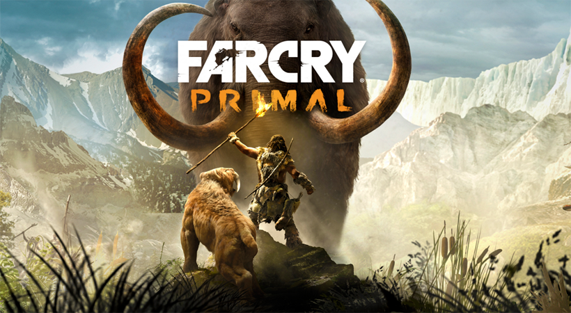
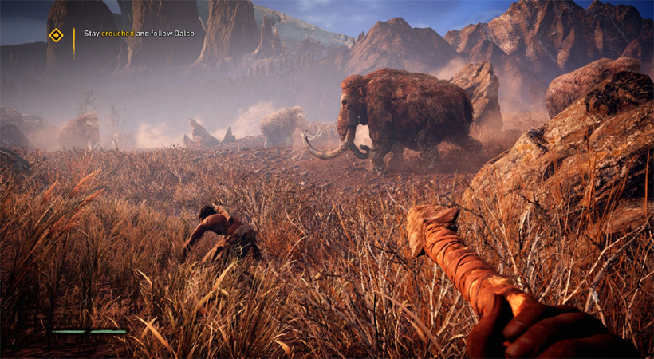
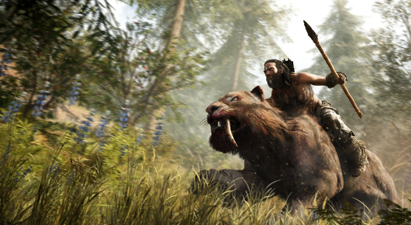

Far Cry Primal Free Download PC
Far Cry Primal Free Download PC Game setup in single direct link for Windows. Far Cry Primal is an awesome action and adventure game
Far Cry Primal PC Game 2016 Overview
Far Cry Primal has been developed and published under the banner of Ubisoft. This game was released on 1st March, 2016. You can also download Far Cry 2.

Features of Far Cry Primal
i) Awesome action and adventure game.
ii) Set in the stone age.
iii) Need to face Sabretooth tigers and Mammoths.
iv) Need to craft deadly weapons.
v) Need to save land of Oros.
vi) Got scintillating graphics and awesome sounds.

System Requirements of Far Cry Primal
Before you start Far Cry Free Download make sure your PC meets minimum system requirements.
i) Tested on Windows 7 64-Bit
ii) Operating System: Windows Vista/7/8/8.1/10
iii) CPU: Intel i3 6300T or equivalent benchmark (5,199) – Intel i3 4340 (5,226), and Intel i3 4350 (5,302) as alternatives.
iv) RAM: 6GB
v) Setup Size: 16.6GB
vi) Hard Disk Space: 20GB

Far Cry Primal Free Download
Click on the below button to start Far Cry Primal. It is full and complete game. Just download and start playing it. We have provided direct link full setup of the game.